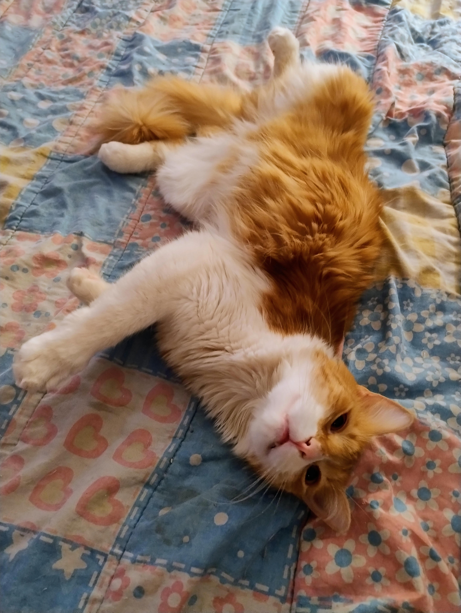

La vida de Boki y Ronny
En una casa soleada, dos hermanos gatos, Boki y Ronny, compartían un jardín lleno de aventuras. Boki, el gato naranja, era enérgico y juguetón, mientras que Ronny, el gris, prefería la tranquilidad. A menudo, se encontraban en medio de pequeñas peleas, correteando y jugando hasta que el entusiasmo de Boki lo llevaba a llorar, su llanto resonando en el aire.

Maga y Agus, sus dueños, siempre estaban cerca, observando con una sonrisa. Cuando Boki lloraba, Agus se acercaba con cariño, acariciando su suave pelaje, mientras Maga le daba un juguete para distraerlo. Después de cada disputa, Ronny se unía a su hermano, y juntos se acurrucaban al sol, dejando atrás los momentos de pelea.

Así, entre risas, lágrimas y el cariño de Maga y Agus, Boki y Ronny aprendían a quererse más cada día, fortaleciendo su lazo fraternal en cada aventura del jardín.